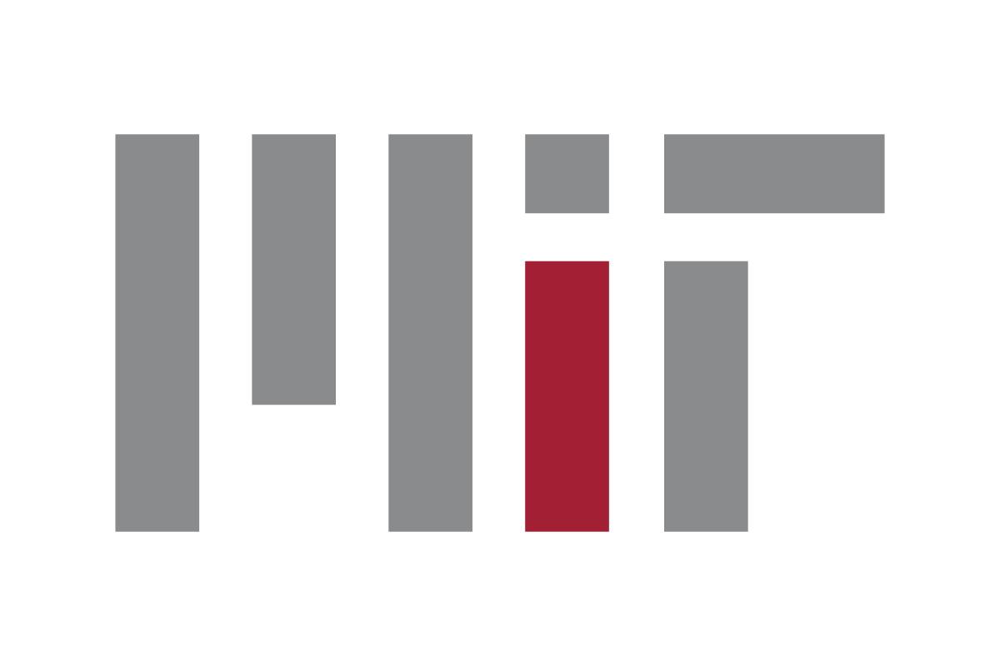
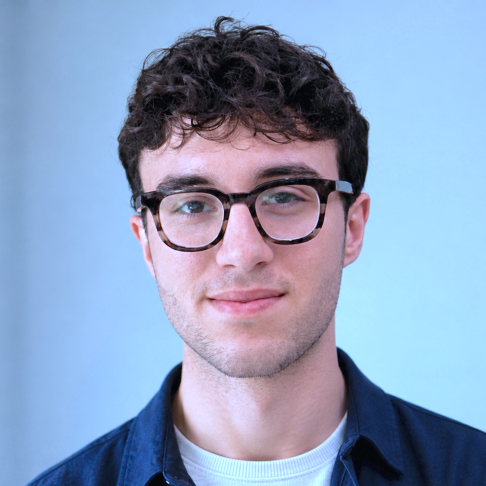

Whose knowledge counts?
Models learn from what was recorded and digitized. Participants will look for the people, histories, and forms of knowledge left outside that record.

CriticalDataReimagining Healthcare Innovation
A Thai-language workshop on healthcare AI, local context, and who gets to evaluate the systems that shape care.
AI as a Catalyst Bangkok treats people affected by healthcare systems as co-designers, not an audience. The workshop asks what an AI system misses when it travels across languages, cultures, and institutions.
Participants work in small, mixed groups. Each table compares model responses, names failure modes, and decides what local evidence and human judgment the system still needs.
The day will run in Thai, with translation support for the visiting team. Local facilitators will adapt the exercises and examples to the Thai context.
Translation support will connect the visiting and local teams.
Round tables of six to eight, with one laptop per group.
Models learn from what was recorded and digitized. Participants will look for the people, histories, and forms of knowledge left outside that record.
Teams will compare similar prompts across Thai and English to see how language, training data, and cultural assumptions change an answer.
Before proposing another tool, the room will ask whether it understands the underlying clinical, social, and institutional problem.
The organizers have confirmed a half-day format. Exact timing and the final room schedule are still being coordinated with the main event.
QSNCC · Room 04AB · Bangkok
Groups of six to eight will work around round tables with a facilitator and at least one laptop. Non-technical and community perspectives are part of the evaluation, not an add-on after the technical work is finished.
Run the same healthcare scenario through several models, then compare what each answer emphasizes, assumes, omits, or gets wrong.
Build criteria that matter to patients, caregivers, clinicians, learners, and communities instead of relying on a single impression of quality.
Identify realistic uses, downstream risks, and the checks people need before a model can support healthcare decisions.
MIT Critical Data · Harvard Medical School
MIT Hacking Medicine
MIT Critical Data · Clinical AI research
MIT Critical Data · Clinical AI research

MIT Critical Data · Clinical AI research
Workshops take place on October 19 at QSNCC. The main conference follows on October 20 at Grande Centre Point Lumphini.
Use the official event website for current ticket options, the full agenda, and venue updates.
Open official event site